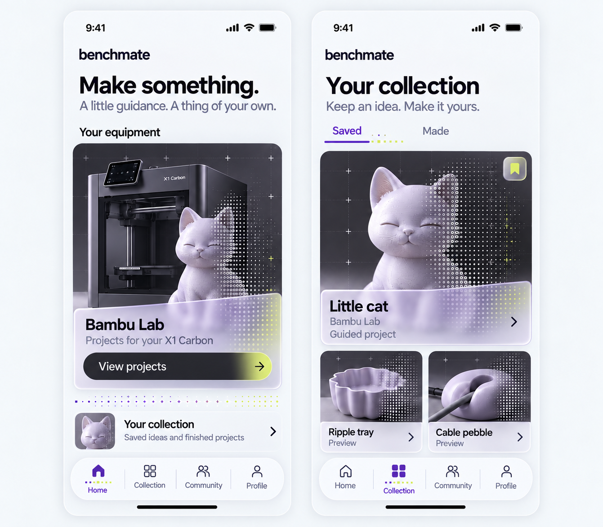
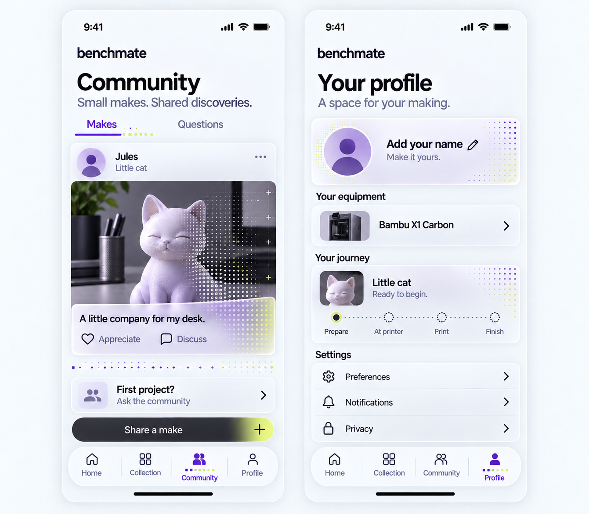

Purple, with a little citron.
The liked purple direction gains a secondary accent, Profile and Community. Matrix details now extend into glass edges, dividers, selected tabs, the avatar and progress indicators.
Purple primaryCitron accent
01 / Familiar pages, expanded navigation
Home still opens the Bambu project route. The four persistent destinations are Home, Collection, Community and Profile.

Static visual review. App code is unchanged. Purple is the accepted direction; citron and these new sections are proposed additions.
Implementation notes
- Keep text and icons crisp; use matrix details for decoration and emphasis, not as the only state signal.
- Preserve the existing Home → Bambu projects → Little cat path. The four-tab dock expands the browsing navigation.
- Fine-tune heading size and validate actual contrast, text scaling and touch targets in components.
- Questions, Made, composer, discussion and settings detail pages are not shown here. No live community or account system exists in the current app.
02 / Shared making, personal progress
Community offers maker stories and questions. Profile brings identity, equipment, the project journey and settings together.
